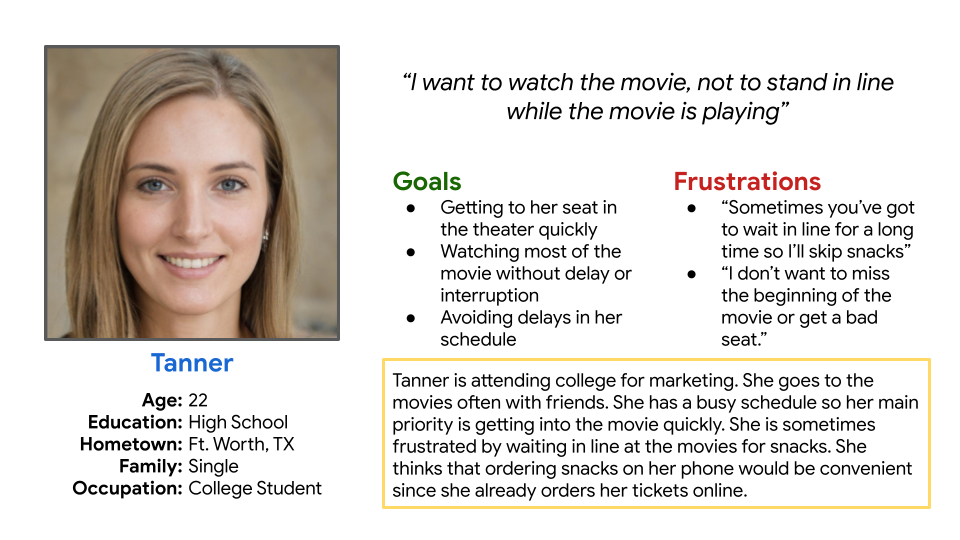
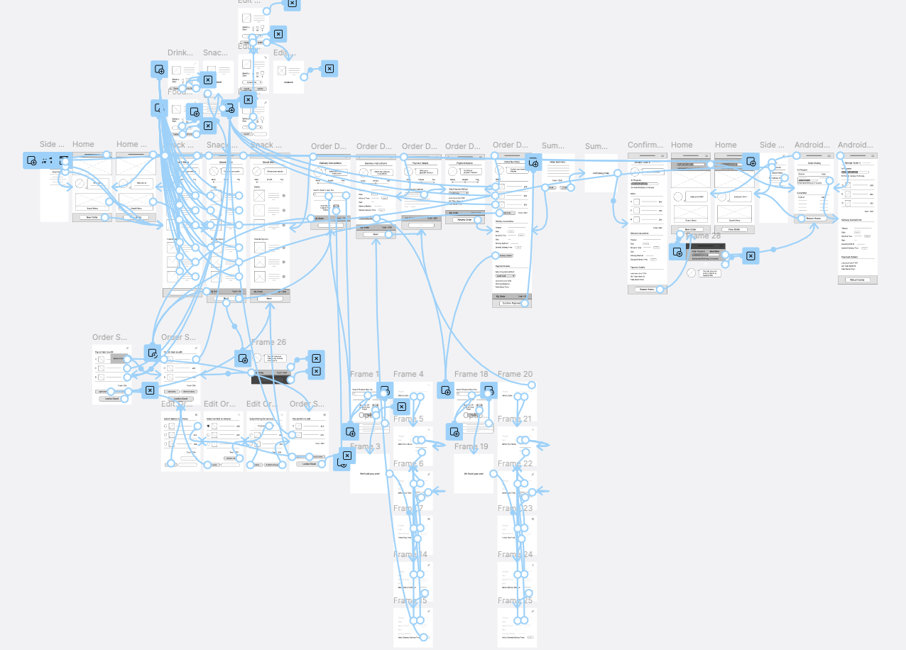
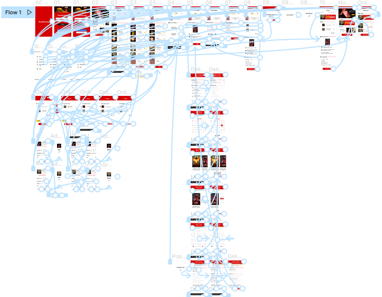

SnackOrdering App Design
The Product
SnackOrdering is an app designed to make the movie-going experience more convenient for users. It offers multiple ways to order snacks, with options like in-seat delivery and scheduled pick up from the snack counter.
Timeline: November 2021 - April 2022
Platform: Mobile App
Role: UX Designer
Responsibilities: Foundational research, conducting interviews, paper and digital wireframing, low and high-fidelity prototyping, usability testing, and iterating on designs
The problem
Busy moviegoers don't want to miss parts of their movie by waiting for movie concessions.
The goal
Design a snack ordering app for a movie theater so that users can order snacks on their own schedule and enjoy their movie to the fullest.
Research
User Interviews
I conducted user interviews and created empathy maps to identify the needs of the users I was designing for. A primary user group identified by the interviews were busy movie-goers who felt stressed by the time constraints of the movie-going process.
User Personas
I created personas to help empathize with and understand the goals and frustrations of the primary user group. This helped me focus on designing an experience that addressed real user needs.

User Journey Mapping
Mapping Tanner's user journey revealed how much stress and anxiety could be eliminated for users with a dedicated snack ordering app.
Competitive Analysis
I conducted a competitive analysis of direct and indirect competitors to identify strengths and weaknesses of their designs. I wanted to see how they addressed the pain points I had identified. This helped me ideate a better user experience when I started designing wireframes.
Pain Points
Arriving
Users are often under a time crunch when arriving, needing to find seats, use restrooms, and get their snacks
Ordering
Many competitors apps don't allow users to view snack menus without having already purchased a ticket
Paying
Processing payments or counting change in the theater can distract users from the movie
Waiting
Needing to wait for their order can cause users to miss parts of the movie, or prevent them from ordering snacks at all
Paper Wireframes
Iterating on each screen of the app with paper wireframes allowed for quick experimentation to see what elements worked best. For the initial designs I wanted to keep things simple and focused on elements that would benefit the user based on feedback from the user research.
Digital Wireframes
Home Screen
For the home screen, I prioritized features that made creating a new order quick and easy.
- A) The large hero image is an easy way for users to see what featured items are available to order
- B) The snack menu section allows users to quickly view the full menu
- C) The prominent 'New Order' Button provides a fast way for users to begin an order
Digital Wireframe of the Home Screen
Order Screen
For the order screen, I focused on designing elements that would provide convenience to users throughout the ordering process.
- D) Keeping the order details prominent allows users to review and edit their orders easily
- E) The delivery instructions section allows users to select the method of delivery which suits their needs best
Digital Wireframe of the Ordering Screen
Low-Fidelity Prototype
Using digital wireframes for each step, I created a low-fidelity prototype. I connected the primary user flow of creating a snack order so that the prototype could be used in a usability study.

User Testing
I conducted two rounds of usability studies. The first study was done with a low-fidelity prototype to see if users could complete the ordering process, and insights were used to iterate on the design. The second study was done with a high-fidelity prototype and revealed areas of the design that could be refined and enhanced.
Round 1
The first usability study revealed that users found the initial designs confusing to navigate and fully complete. To provide better structure I split the process into separate sections which users could complete in an ordered sequence. I also added a progress bar and buttons which would allow users to progress between steps.
Round 2
The second usability study revealed that users wanted more in-depth information when creating and completing their orders. From menu items, to delivery and payment options, I added additional context and relevant information.
Mockups
High-Fidelity Prototype
The final high-fidelity prototype provided an intuitive flow for ordering and completing the checkout process. It also provided users with a simple way to specify their delivery options and keep track of their order progress.
View the SnackOrdering high-fidelity prototype

Conclusion
Result
SnackOrdering lets users order their snacks in a way that best fits their schedule. It helps them pay quickly, and keeps them updated on the status of their order so that no time is wasted waiting in line. The app makes users feel like they have more time and less stress when ordering their snacks at the theater.
What I Learned
While designing the SnackOrdering app, I learned about the importance of iteration during the design process. I also learned how valuable user testing and feedback can be and their importance when deciding what steps to take next.
Possible Next Steps
Follow-up usability study to see if updated designs have improved user experience and solved user pain points.
Recruit users with disabilities to identify potential accessibility issues.
For the next round of user testing, do a moderated in-person study in order to see how users interact with designs in person.
A quote from feedback: "The app was super easy to use and I could see myself using it at the theater all the time. I wish it was real!"
Thank you
Thank you for your time reviewing my work on the SnackOrdering app!
If you'd like to get in touch, please say hi!
claytonanderson.work@gmail.com